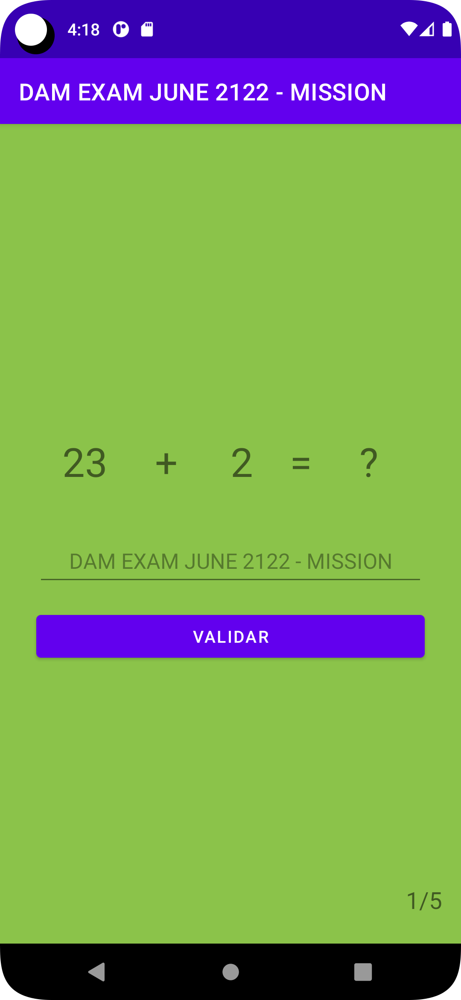

We present in this code lab the statement for the live-coding exam to pass course 102386-DAM. The students have two hours to accomplish 5 points by solving the different challenges proposed.
Rules and constraints
- You are allowed to check the internet and class notes.
- You are not allowed to share information using any media.
- If plagiarism is detected in two or more students, all involved students will fail the test with a 0.
- To deliver the exam, students must present a pull request to the GitHub repository with the following information: SurnameName.

- Android Studio
- Git and Github
Roadmap
- Navigate to the exam public repository.
- Fork the repository (clicking on the fork button).
- Clone your fork into your laptop and start working with it.
- Commit changes after solving each challenge proposed. (In another case, it will penalise you with -0.5 points in your final mark).
- Push all the commits into your cloud repository.
- Navigate to your cloud repository and click the button pull request.
- Compare across forks. The base repo points to my repository and the head to your solution.
- Add a title and description for the pull request.
- Create the pull request to finish the test.
Additional information
Required
Software bugs are inconvenient and potentially expensive. The exam repository contains some bugs and errors you need to correct. This step is required to perform the others. If you cannot fix the issues, you fail the exam. You can use:
- Log information (LogCat)
- Runtime information (Run)
Bug1. Compilation Time
Bug2. Run Time when click the 1 button
Easy
Implement a function that reads an integer from the Shared Memory (key: lives) and increments its value by one unit when the user clicks the button (id: purchaseLivesBt). This way, the TextView (id:livesTv) must be updated each time the user clicks on the button.
Notes:
- Parameter lives must be inited to 0 value at LauncherActivity.
- Databinding is required.

Easy
Implement a function that disables the gameplay when the user losses all his lifes.
Notes:
- Disabling the buttons is enough; it is NOT required any kind of user notification (Dialogs, Toast,...).
Extra (0.5 points): Disable the button (mathAdventureButton) either when no more levels are available or when the user losses all their lifes.
Implement a method to ensure that a user starts with three lives in the game each day. It does not matter how many lives it lost the previous day.
Note: You can use this function to compare two dates.
public static boolean isSameDay(Date date1, Date date2) {
Calendar calendar1 = Calendar.getInstance();
calendar1.setTime(date1);
Calendar calendar2 = Calendar.getInstance();
calendar2.setTime(date2);
return calendar1.get(Calendar.YEAR) == calendar2.get(Calendar.YEAR)
&& calendar1.get(Calendar.MONTH) == calendar2.get(Calendar.MONTH)
&& calendar1.get(Calendar.DAY_OF_MONTH)
== calendar2.get(Calendar.DAY_OF_MONTH);
}
Easy
Implement a button in Adventure View that allows the user to reset the sharedPreferences (key=current_level) to 0 value.
Medium
Implement three different modes (easy, medium and hard). To do it, you must generate 3 buttons in game_layout.xml (easyBt, mediumBt, HardBt).
Notes:
- Make it simple. You can reuse all the code and classes.
- It is forbidden to create more layout files. You need to reuse the provided ones.
- Use data binding to link the buttons with the different modes.
